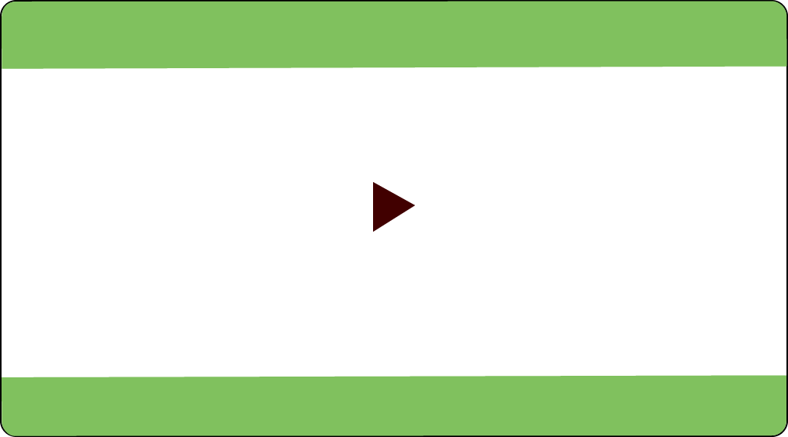

- 문제 1
- 문제 2
- 문제 3
- 문제 4
- 문제 5
- 문제 6
- 문제 7
- 문제 8
-
계산해 보시오.
|
7 | 시간 |
53 | 분 |
30 | 초 |
| － |
4 | 시간 |
3 | 분 |
10 | 초 |
|
|
|
| 시간 |
| 분 |
| 초 |
|
5 | 시간 |
10 | 분 |
12 | 초 |
| － |
2 | 시간 |
40 | 분 |
10 | 초 |
|
|
|
| 시간 |
| 분 |
| 초 |
-
우주는 훌라후프를 7분 15초 동안 돌렸고 샛별이는 6분 50초 동안 돌렸습니다. 우주가 샛별이보다 훌라후프를 몇 초 더 돌렸는지 구해 보시오.
-
별빛시에서 은하수시를 운행하는 가
버스, 나
버스의 운행 시간은 각각 1시간 17분 20초, 1시간 45분 47초입니다. 어느 버스의 운행 시간이 얼마나 더 긴지 구해 보시오.
-
기차표를 보고 서울에서 대전까지 가는 데 걸린 시간을 구하시오.

20OO년 OO월 OO일
서울
14:18
대전
15:32
승차권
-
안에 알맞은 수를 써넣으시오.
|
12 | 시 |
57 | 분 |
42 | 초 |
| － |
4 | 시간 |
38 | 분 |
14 | 초 |
|
|
|
| 시 |
| 분 |
| 초 |
-
계산을 하시오.
-
달리기 대회에서 어떤 선수가 8시 45분에 출발하여 11시 56분에 도착하였습니다.
이 선수가 달린 시간을 구하시오.
구해야 할 것
주어진 것
-
슬기네 학교에서는 40분 동안 수업을 하고 10분씩 쉽니다.
3교시가 11시 40분에 끝났다면 1교시를 시작한 시각은 몇 시 몇 분인지 구하시오.
구해야 할 것
주어진 것